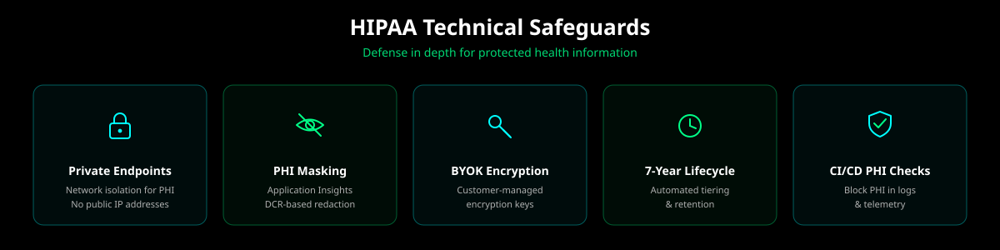
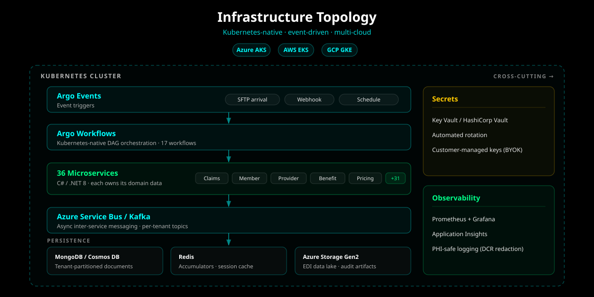
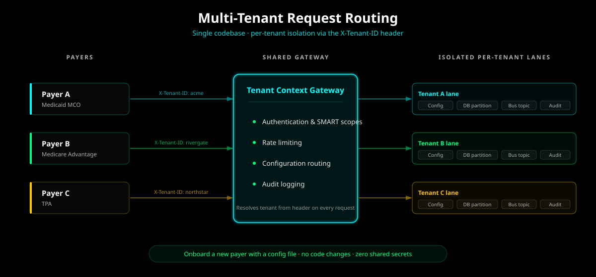

Secure development checks
Automated dependency, secret, container, and PHI-focused checks run in the public repository. Findings still require review and remediation.
Cloud Health Office is source-available payer infrastructure, not a black-box certification claim. This page distinguishes controls visible in the repository, reference deployment patterns, customer responsibilities, cloud-provider assurance, and the work required before production PHI processing.
A repository control, a reference architecture, and a production operating control are different things. Cloud Health Office keeps those categories separate so a security review can test the right evidence.
Automated dependency, secret, container, and PHI-focused checks run in the public repository. Findings still require review and remediation.
Infrastructure supports private endpoints, managed identities, RBAC, key-management options, audit logging, and tenant-aware routing.
Identity, networks, keys, logging, retention, integrations, recovery, and operating procedures must be verified in the target environment.
This site does not claim that Aurelianware or Cloud Health Office currently holds SOC 2 Type II or HITRUST certification.
PHI processing, support coverage, incident-notification targets, availability commitments, and retention terms are defined per engagement.
Published benchmarks are local validation evidence. Production capacity and regulatory posture require customer-specific testing and review.
The final boundary varies by operating model, but responsibility never disappears into a generic “HIPAA-ready cloud” statement.
| Control domain | Cloud Health Office provides | Customer validates and operates | Cloud provider provides |
|---|---|---|---|
| Identity and access | Authentication, authorization, RBAC, tenant-context, and managed-identity integration patterns. | Identity-provider configuration, role assignments, access reviews, MFA policy, and workforce lifecycle. | Identity and key-management service availability and underlying platform controls. |
| Data protection | Encryption configuration, PHI-aware logging, data partitioning, retention options, and secret-store integration. | Approved data classes, key ownership, retention schedule, backup policy, export controls, and deletion acceptance. | Encryption primitives, regional storage services, physical media controls, and documented service assurance. |
| Network security | Private-endpoint, ingress, egress, service-to-service, and network-policy reference patterns. | Production topology, DNS, firewall, allow-list, egress, certificate, and administrative-access configuration. | Virtual-network and managed-service isolation capabilities plus infrastructure availability. |
| Monitoring and response | Structured audit events, telemetry redaction patterns, health signals, and alerting templates. | Alert routing, on-call coverage, SIEM integration, incident command, evidence retention, and notification decisions. | Platform logs, regional status, native monitoring services, and provider incident communications. |
| Compliance and contracts | Control documentation, implementation evidence, architecture review, and contract-specific commitments. | Risk analysis, policies, vendor review, BAA determination, regulatory interpretation, and production acceptance. | Service-specific compliance documentation and contractual terms for eligible cloud services. |

Public evaluation begins with deterministic synthetic data. A production PHI workload is a separate, governed step with explicit contractual, architectural, and operational prerequisites.
Public source does not make software secure by itself. It does make the checks, changes, and unresolved work easier to inspect.
main
Do not disclose security vulnerabilities, PHI, credentials, or tenant data through public issues, discussions, pull requests, or comments.
security@cloudhealthoffice.com is the private reporting channel.
Include the affected component, steps, potential impact, and redacted evidence. Do not include real PHI or production credentials.
Coordinate disclosure privately while the issue is evaluated and remediated. Public reporting can follow an agreed disclosure path.
Production readiness is an acceptance process, not a checkbox inherited from a repository or cloud provider.
Identify workflows, users, integrations, data classifications, regions, recovery objectives, operating model, and regulatory responsibilities.
Test identity, authorization, isolation, encryption, redaction, auditability, recovery, capacity, failure handling, and operational procedures.
Execute required agreements, record exceptions, approve evidence, establish support and incident paths, and monitor the accepted control baseline.

We will review the source-visible controls, identify deployment-specific gaps, and define the evidence required before your organization accepts a pilot or production workload.